Kakegurui (賭カケグルイ) é uma série de mangá serializada pela revista Gangan Joker da Square Enix,
escrita por Homura Kawamoto e ilustrada por Toru Naomura. A série foi adaptada num anime, enquanto a
segunda temporada foi nomeada como Kakegurui ××; ela também foi adaptada em duas temporadas e um
filme em live action. Também há as três séries spin-off, Kakegurui (Kakkokari), Kakegurui Twin
(também adaptada num anime) e Kakegurui Midari.
A história se passa numa escola de elite, a Escola Particular Hyakkao, onde os estudantes são
encorajados a apostar para desenvolverem suas habilidades de observação e de ficarem acima dos
demais, considerando que grande parte de seu corpo discente constitue-se dos filhos dos grandes
líderes do país.
Yumeko Jabami
A princípio, Yumeko parece ser apenas uma jovem garota amigável. Ela possui um comportamento
bastante carismático e otimista, além de aparentar ser um tanto ingênua, até mesmo sendo capaz de
fazer amizade com aqueles que jogou anteriormente, um exemplo bem claro sendo a própria Mary
Saotome.
Seu charme é estranhamente atrativo e ela foi capaz de chamar a atenção do Grêmio
Estudantil em seu primeiro dia em Hyakkao. Apesar de geralmente ser amigável, Yumeko não age dessa
forma quando é para expor a trapaça de seus oponentes, demonstrando uma capacidade perceptiva
admirável ao notar em apenas algumas poucas rodadas de jogo, utilizando o próprio truque deles
contra eles. Portanto, ela condena o uso de trapaças e truques, valorizando honestidade acima de
educação nesses casos.
Mary Saotome
No início, Mary mostra-se incrivelmente sádica e convencida, bem demonstrado pela forma como ela
tratava Ryota, seu colega de classe, depois que ele se transformou em um "bicho de estimação",
devido ao seu baixo status social na escola e cruelmente provocava seus oponentes durante as
apostas. Mary também é extremamente egoísta dentro e fora das partidas, muitas vezes confiando em
sua própria vitória.
Depois de perder para Yumeko e experimentar a vida como um bicho de estimação, Mary ficou
desesperada para recuperar seu status na academia, sem ter outro objetivo em mente. Logo depois de
ser humilhada por Yuriko Nishinotoin numa partida oficial, Mary acaba perdendo seu orgulho e caindo
num estado de tristeza e vergonha. Depois de recuperar seu status, ela parece não ser mais tão
arrogante e cruel, às vezes sendo apenas incomodada pela covardia de Ryota ou pelo comportamento
imprudente de Yumeko, mas ainda se preocupando profundamente com eles conforme foi desenvolvendo
laços com ambos. Ela também desenvolveu um enorme ódio contra o Grêmio Estudantil, desejando que
eles pagassem pelo que fazem com os bichos de estimação.
Ryota Suzui
Ryota é uma pessoa amigável e gentil que, antes de conhecer Yumeko, possuía baixa autoestima que só
diminuiu depois que sua dívida com Mary aumentou ainda mais. Apesar de não ser reservado, ele também
não é extrovertido e demonstra uma certa timidez principalmente em volta de outras garotas. Mary já
apontou que ele é honesto ao ponto de ser ridículo.
Ryota é dito como sendo bastante equilibrado mas compreensivo por tentar entender o
comportamento
louco e excêntrico de Yumeko, e ele raramente guarda rancor contra as pessoas, um claro exemplo
sendo Mary, desde que ele a trata normalmente mesmo depois de toda a humilhação que ela o fez
passar.
Kirari Momobami
Kirari é uma garota de personalidade misteriosa e imprevisível, descrita como uma moça educada, refinada e sofisticada. Possui atitudes calculistas, manipuladoras e psicopatas mostrando ser alguém que não se importa com mais ninguém além de si própria, pondo a si e aos seus pensamentos em primeiro lugar; isso é bem demonstrado quando Mary Saotome recusa seu convite para entrar no Grêmio, já que ela apenas ridicularizou-a e a qualquer motivos que a outra talvez possuísse.
Ririka Momobami
Ririka é a irmã gêmea de Kirari Momobami. A família tem ligações com a família da Yumeko Jabami.
O rosto esta sempre escondido por uma máscara que faz com que distorça sua própria voz (torna-se
grave e assustadora o que é o contrário da voz que ela verdadeiramente apresenta quando lhe é tirada
a máscara).
Ririka é uma pessoa muito quieta e atua normalmente como observadora.
Quando lhe tiram a máscara é lhe revelada novas características psicológicas.
É uma pessoa extremamente tímida que não tem auto-confiança. No entanto, ela tem abilidade de se
disfarçar de sua irmã gêmea e também copiar perfeitamente o seu comportamento como aconteceu na
reunião que teve com a sua família.